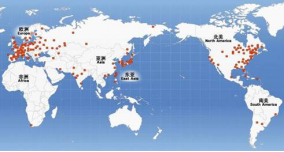
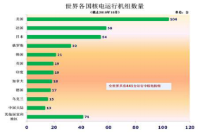
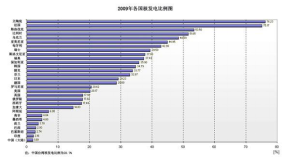
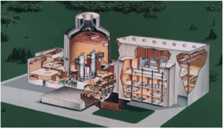

21世纪以来，随着世界经济的复苏，以及越来越严重的能源、环境危机，促使核电作为清洁能源的优势又重新显现，同时经过多年的技术发展，核电的安全可靠性进一步提高，世界核电的发展开始进入复苏期，世界各国都制定了积极的核电发展规划。美国、欧洲、日本开发的先进轻水堆核电站，即“第三代”核电站取得重大进展，有的已投入商运或即将立项。
▲ 发展现状
核电与水电、煤电一起构成了世界能源供应的三大支柱，在世界能源结构中有着重要的地位。目前世界上已有30多个国家和地区建有核电站。根据国际原子能机构（IAEA）统计，截至2010年10月底，全世界共有441台核电机组在运行，总装机容量约3.7亿千瓦。主要分布在北美、欧洲及东亚的一些工业化国家，其中美国有104台、法国58台、日本54台、俄罗斯32台、韩国21台。核电发电量约占全球总发电量的16%，其中法国高达75.17%，日本为29.23%，美国为20.17%，已有18个国家和地区核发电量占发电总量的比例超过20%。目前全球在建核电机组63台，装机容量为6080万千瓦，主要集中在亚洲的中国、印度和俄罗斯等国家。

图5：世界核电站分布图

图6：全球核电站运行机组数量图

图7：世界各国核电发电比例图
▲ 发展趋势
1、市场规模扩大
出于对环保、生态和世界能源供应等的考虑，核电作为一种安全、清洁、低碳、可靠的能源，近年来已被越来越多的国家所接受和采用，在全球部分地区掀起了核电建设热潮。如今，越来越多的国家正在考虑或启动建造核电站的计划，已有60多个国家正在考虑采用核能发电。到2030年前，估计将有10-25个国家加入核电俱乐部，将新建核电机组。据国际原子能机构预测，到2030年全球的核电装机容量增加至少40%。
2、研发新一代核电技术
目前，世界正在运行的机组采用的基本是第二代核电技术。世界各国在二代技术基础上进行了改进与创新，研发出三代核电技术。采用了改进型和革新型设计的新堆型提高了核电安全性、可靠性和经济性。
堆型 | 代表国家 | 数量（台） |
压水堆（PWR） | 美、法、日、俄 | 269 |
沸水堆（BWR） | 美、日、瑞典 | 92 |
重水堆（PHWR） | 加拿大 | 46 |
气冷堆（GCR） | 英国 | 18 |
石墨水冷堆（LWGR） | 俄罗斯 | 15 |
表1：世界核电主要堆型及代表国家一览表
3、提高核电安全性、经济性
国际核能界总结了三哩岛和切尔诺贝利两大事故的教训和世界核电站近1万堆年的运行经验，在提高核电安全性和经济性方面取得重大突破。新建核电站的风险概率可在现有基础上再降低一数量级，同时通过简化系统和容量效应的发展降低了建造成本、运行成本等，使其低于传统的煤电、油电和水电等。

图8：AP1000核电站